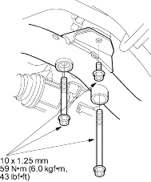
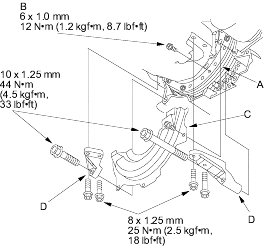
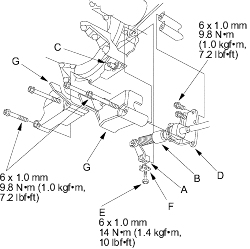

- Install the rear mount bracket bolts.

- Remove the transmission jack from the transmission.
- Attach the torque converter to the drive plate (A) with eight bolts (B). Rotate the crankshaft pulley as necessary to tighten the bolts to 1/2 of the specified torque, then to the final torque, in a criss-cross pattern. After installing the last bolt, check that the crankshaft rotates freely.

- Install the torque converter cover (C) and engine stiffeners (D).
- Tighten the crankshaft pulley bolt as necessary (see page 6-16).
- Install the control lever (A) with the shift cable (B) on the control shaft (C). Do not bend the shift cable excessively.

- Secure the shift cable holder (D) with the bolts on the transmission.
- Install the lock bolt (E) with a new lock washer (F), then bend the lock washer tab against the bolt head.
- Install the shift cable covers (G).